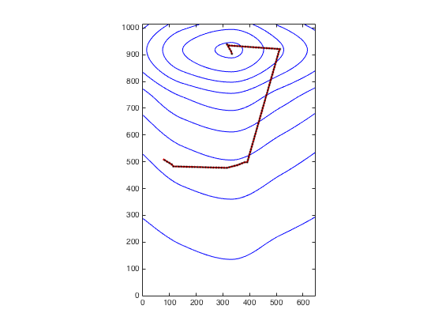

The associated matlab model provided by the authors of the paper:
Wystrach A, Lagogiannis K, Webb B (2016) Continuous lateral
oscillations as a core mechanism for taxis in Drosophila larvae. Elife
is available for download here:
https://github.com/InsectRobotics/larvaTaxisOscillator
Note from the ModelDB administrator:
To run the model download the code from the above github site.
Start matlab and change to the Data folder to load the mat file:
cd Data
gain=-200; % transform transiant into angle
load ('Odourgradient_side');
display=1;
time=100;
then change to the code folder and run discrete_time_agent
cd ../Code
[x,y,th] =discrete_time_agent(map, time,gain, display);
After a minute you should get this result:
